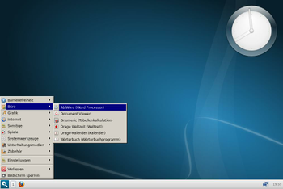
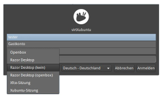
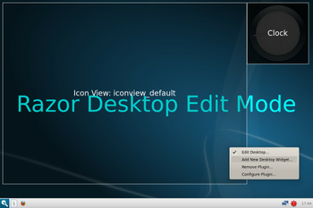
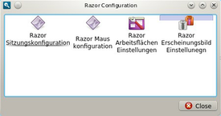

Razor-qt
Archivierte Anleitung
Dieser Artikel wurde archiviert, da er - oder Teile daraus - nur noch unter einer älteren Ubuntu-Version nutzbar ist. Diese Anleitung wird vom Wiki-Team weder auf Richtigkeit überprüft noch anderweitig gepflegt. Zusätzlich wurde der Artikel für weitere Änderungen gesperrt.
Zum Verständnis dieses Artikels sind folgende Seiten hilfreich:
Razor-qt  ist eine schlanke Desktop-Umgebung auf Basis von Qt. Da Qt oft fälschlicherweise mit KDE gleichgesetzt wird, sei hier explizit darauf hingewiesen, dass Razor-qt keinerlei Abhängigkeiten zu den KDE-Bibliotheken mit sich bringt. Die Entwicklung von Razor-qt wurde 2010 mit dem Ziel begonnen, eine einfache, schnelle und intuitiv zu bedienende Desktop-Umgebung zu schaffen.
ist eine schlanke Desktop-Umgebung auf Basis von Qt. Da Qt oft fälschlicherweise mit KDE gleichgesetzt wird, sei hier explizit darauf hingewiesen, dass Razor-qt keinerlei Abhängigkeiten zu den KDE-Bibliotheken mit sich bringt. Die Entwicklung von Razor-qt wurde 2010 mit dem Ziel begonnen, eine einfache, schnelle und intuitiv zu bedienende Desktop-Umgebung zu schaffen.
Enthalten sind die Schlüsselkomponenten einer Desktop-Umgebung: Panel, Desktop, Anwendungsstarter, Konfigurationswerkzeuge und Sitzungsverwaltung. Welcher Fenstermanager eingesetzt werden soll, bleibt dem Benutzer selbst überlassen. Ein Beispiel für eine inoffizielle Ubuntu-Variante mit Razor-qt als Standard-Desktop ist SalentOS .
Im Juli 2013 wurde bekannt, dass sich die Entwickler mit denen von LXDE zusammengetan haben: Schlanke Linux-Desktops - Razor-Qt und LXDE-QT fusionieren  . Damit ist die Version 0.5.2 die letzte eigenständige Version.
. Damit ist die Version 0.5.2 die letzte eigenständige Version.
|  |
| Razor-qt Desktop |
Voraussetzungen¶
Der gewünschte Fenstermanager muss vorab installiert werden. Die Razor-Entwickler setzen in erster Linie Openbox ein, jedoch können bspw. auch KWin, Compiz und weitere eingesetzt werden.
Installation¶
Razor-qt ist nicht in den offiziellen Paketquellen enthalten. Zur Installation muss daher ein "Personal Package Archiv" (PPA) [1] der Entwickler genutzt werden.
PPA¶
Adresszeile zum Hinzufügen des PPAs:
ppa:razor-qt/ppa
Hinweis!
Zusätzliche Fremdquellen können das System gefährden.
Ein PPA unterstützt nicht zwangsläufig alle Ubuntu-Versionen. Weitere Informationen sind der  PPA-Beschreibung des Eigentümers/Teams razor-qt zu entnehmen.
PPA-Beschreibung des Eigentümers/Teams razor-qt zu entnehmen.
Damit Pakete aus dem PPA genutzt werden können, müssen die Paketquellen neu eingelesen werden.
Nach dem Aktualisieren der Paketquellen kann folgendes Paket installiert [2] werden:
razorqt (ppa)
 mit apturl
mit apturl
Paketliste zum Kopieren:
sudo apt-get install razorqt
sudo aptitude install razorqt
|  |
| Auswahl im Anmeldebildschirm |
Nach der Installation kann Razor-qt zusammen mit dem gewünschten Fenstermanager im Anmeldebildschirm ausgewählt werden.
Weitere Pakete¶
Zusätzlich können die folgenden Pakete installiert werden:
razorqt-config (ppa, Konfigurationswerkzeug)
razorqt-policykit-agent (ppa, siehe PolicyKit)
razorqt-power (ppa, Powermanagement-Werkzeug - in erster Linie für Notebooks)
mit apturl
Paketliste zum Kopieren:
sudo apt-get install razorqt-config razorqt-policykit-agent razorqt-power
sudo aptitude install razorqt-config razorqt-policykit-agent razorqt-power

Konfiguration¶
Panel¶
Razor-qt verfügt standardmäßig über ein Panel, das sich am unteren Bildschirmrand befindet. Das Hinzufügen weiterer Panels ist derzeit nicht möglich. Durch  auf das Panel und der Auswahl von "Panel Konfigurieren" kann die Höhe, Breite und Ausrichtung angepasst werden. Zusätzlich kann durch auf das Panel und "Zeige dieses Panel" eingestellt werden, ob das Panel am oberen, unteren, linken oder rechten Bildschirmrand angezeigt werden soll.
auf das Panel und der Auswahl von "Panel Konfigurieren" kann die Höhe, Breite und Ausrichtung angepasst werden. Zusätzlich kann durch auf das Panel und "Zeige dieses Panel" eingestellt werden, ob das Panel am oberen, unteren, linken oder rechten Bildschirmrand angezeigt werden soll.
Plugins¶
Das Panel kann durch verschiedene Plugins erweitert werden. Um ein neues hinzuzufügen, klickt man auf das Panel und wählt "Plugins → Plugins hinzufügen...". Außerdem können vorhandene Plugins konfiguriert, verschoben und gelöscht werden. Selbiges ist auch durch auf das entsprechende Plugin möglich.
Nachfolgend eine kurze Auflistung der zur Verfügung stehenden Plugins:
Anwendungsmenü: Menübasierter Anwendungsstarter
Anwendungsverwalter: Wechsel zwischen laufenden Anwendungen
Arbeitsflächenumschalter: Zwischen virtuellen Arbeitsflächen umschalten
Bildschirmschoner: Bildschirmschoner aktivieren und/oder Bildschirm sperren
Fensterleiste: Zugang zu minimierten Anwendungen in der Fensterleiste
Schnellstarter: Symbole zum Starten einer beliebigen Anwendung
Uhr: Uhr und Kalender
Wechseldatenträger: Wechseldatenträgerverwaltung
Zeige Desktop: Fenster minimieren
Arbeitsfläche¶
|  |
| Desktop Editiermodus |
Zum Ändern des Desktophintergrunds klickt man auf den Desktop und wählt "Set Desktop Background". Weitere Konfigurationsmöglichkeiten stehen über das Menü "Einstellungen → Razor-qt settings → Razor Arbeitsflächen Einstellungen" zur Verfügung.
Widgets¶
Auf dem Desktop können Miniprogramme (Widgets), wie sie bspw. von KDE Plasma bekannt sind, platziert werden. Auf Grund des frühen Entwicklungsstadiums von Razor-qt ist die Auswahl noch recht gering. Durch auf den Desktop und Auswahl von "Edit Desktop" wechselt man in den Editiermodus. In diesem Modus können vorhandene Widgets mit der Maus verschoben werden. Durch auf ein Widget kann dieses gelöscht oder konfiguriert werden. Außerdem können über "Add New Desktop Widget..." neue Widgets hinzugefügt werden.
Derzeit stehen lediglich eine Uhr, ein Widget zur Anzeige des Inhalts eines beliebigen Ordners und ein Hallo_Welt-Beispiel zur Verfügung.
Sitzungsverwaltung¶
Über das Menü und der Auswahl von "Einstellungen → Razor-qt settings → Razor Sitzungskonfiguration" gelangt man zur Sitzungsverwaltung. Dort kann der gewünschte Fenstermanager und die zu ladenden Razor-Module ausgewählt werden. Des Weiteren können die Standardanwendungen für das Terminal und den Browser definiert werden. Zusätzlich gibt es Konfigurationsmöglichkeiten zum Autostart und der Umgebungsvariablen.
Configuration Center¶
|  |
| Configuration Center |
Sofern das Paket razorqt-config installiert ist, kann man über das Menü "Einstellungen → Razor-qt settings → Razor Configuration Center" oder über das Werkzeugsymbol im Panel das "Configuration Center" öffnen. Alternativ sind die im Configuration Center zusammengeführten Konfigurationsanwendungen auch direkt über das Menü startbar.
Zusätzlich zum Configuration Center wird über das oben genannte Paket ein Programm zum Anpassen des Erscheinungsbilds von Anwendungen ("Razor Erscheinungsbild Einstellungen") und der Maus ("Razor Mauskonfiguration") installiert. Mit diesen beiden können derzeit lediglich die Designs für Symbole und des Mauszeigers geändert werden.
Razor Autosuspend¶
Ist das Paket razorqt-power installiert, kann über das Menü unter "Zubehör → Razor Autosuspend" ein Programm gestartet werden, dass sich mit einem Symbol neben der Uhr im Panel integriert. Über auf das Symbol und der Auswahl von "Settings...", können Einstellungen vorgenommen werden, was bei niedrigem Batteriestand oder bei bei geschlossenem Notebookdeckel geschehen soll (nichts / Tiefschlaf / Ruhezustand).
Links¶
Wiki
- Dokumentation
Razor-qt 0.5 veröffentlicht
- Pro-Linux.de, 10/2012 Veröffentlichung von v0.4.0
- Pro-Linux.de, 12/2011
- Erstellt mit Inyoka
-
 2004 – 2017 ubuntuusers.de • Einige Rechte vorbehalten
2004 – 2017 ubuntuusers.de • Einige Rechte vorbehalten
Lizenz • Kontakt • Datenschutz • Impressum • Serverstatus -
Serverhousing gespendet von